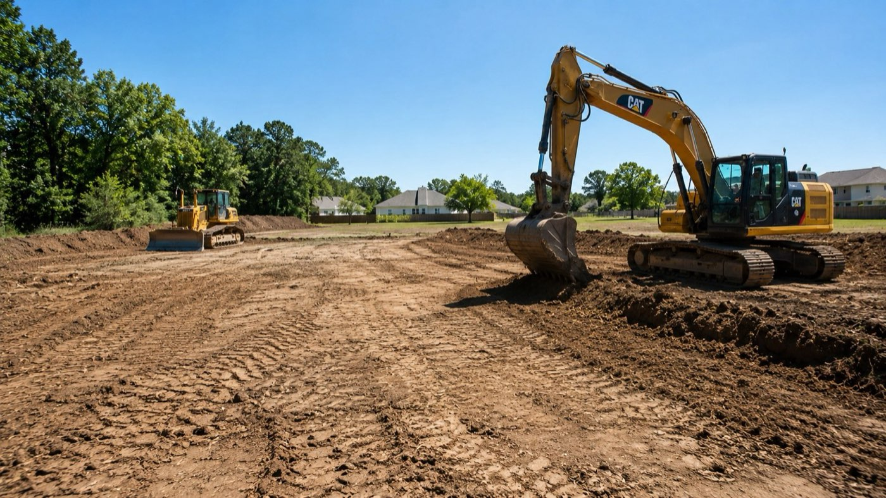

Blog · Guide · Published June 2026
Site Grading vs Excavation: What's the Difference (and Which Does Your Project Need)?

Grading and excavation get used interchangeably on most jobsites, but they're distinct scopes — with different equipment, different costs, and different schedules. Knowing which one your project actually needs (often it's both) saves a lot of surprise on the first invoice.
The technical difference
Grading reshapes the existing soil surface to a target elevation and slope. It works near the existing ground level — typically within a foot or two of original grade. Strip topsoil, balance cut and fill across the site, finish to a plan tolerance the engineer signs off on.
Excavation removes a defined volume of soil — a basement, a detention pond, a utility trench, an oversized pad cut for a building going into the slope. It's measured in cubic yards and almost always involves haul-off (or fill balance somewhere on the site).
Most commercial pad-site projects use both: excavate the building footprint to its design subgrade, then grade everything around it to drain to detention.
How the costs compare
Grading is usually cheaper per square foot than excavation because it's moving less dirt vertically. Excavation gets expensive fast when the dirt has to be hauled off the site — trucking can dominate the bill on tight urban sites. The other big driver is what the soil is: clay, sand, and loam grade easily; rock excavation can run 2-5x the price of dirt excavation.
Rough 2026 Greater Houston ranges:
- Rough grading, balanced cut/fill: $0.50–$1.50 per square foot
- Finish grading, plan tolerance: $0.25–$0.60 per square foot on top
- Mass excavation, dirt, no haul: $4–$10 per cubic yard
- Mass excavation with haul-off: $12–$28 per cubic yard depending on distance
- Rock excavation: $35–$100+ per cubic yard depending on what kind of rock
- Trench excavation for utilities: typically priced per linear foot at depth
When you need grading only
You probably only need grading if the answer to all of these is yes:
- The site is already roughly at the design elevation
- You don't have basements, big foundations going below grade, or detention ponds
- Cut and fill can be balanced on site (no haul-off required)
- You're not running into rock or perched water
Common grading-only scopes: residential lot regrade to fix drainage, a small commercial pad on flat ground, a parking lot expansion that ties into existing grade.
When you need excavation
You almost always need excavation when any of these are true:
- You have a basement, crawlspace, or below-grade foundation element
- The site requires detention pond cuts
- You're cutting building pads more than 2-3 feet below existing grade
- You have underground utility runs deeper than ~3 feet
- You're removing rock
- The site requires significant net export of dirt (not balanced)
The bid trap to avoid
The single biggest mistake on commercial sites is bidding grading and excavation as a lump-sum together without breaking out the cut/fill quantities. When change conditions show up — perched water, hidden rock, an unexpected utility line — the contractor can't tell you what the change order should be because the original quantities weren't itemized.
A good site-work bid breaks out:
- Strip topsoil quantity (CY)
- Cut volume by zone (CY)
- Fill volume by zone (CY)
- Import or export quantity (CY)
- Excavation by element (basement, detention pond, utility trench)
- Density testing and as-builts (LS)
- SWPPP install and maintenance (LS)
A note on geotech
Don't sign a grading or excavation bid without a geotech report on a commercial pad site. The report tells you (and the contractor) what the soil actually is, what compaction it'll hold, and whether stabilization (lime, cement) is required under paving. A bid given without geotech is a bid that's making assumptions about cost, and those assumptions become change orders.
Ready to scope your project?
Veritas Builders handles commercial site work across Magnolia, Conroe, Montgomery County, and Greater Houston. Line-item bids, coordinated trades, and one accountable team from raw ground to build-ready.